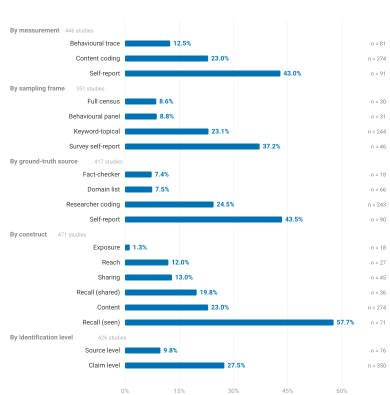
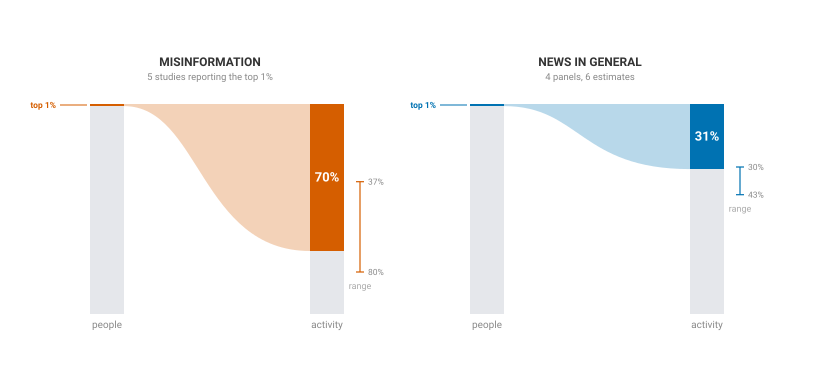

Systematic review · 443 studies · 1,048 estimates
How much misinformation do people actually see?
Published estimates run from a fraction of one percent to strong majorities. This review collects them, codes what each one measures, and quantifies why they disagree.
1.3%
of what people consume online is misinformation
18 studies · behavioural12.0%
of people encounter it at least once
27 studies · behavioural13.0%
of sharing acts carry misinformation
45 studies · behavioural19.8%
say they have shared it
36 studies · surveys23.0%
of items in a sampled corpus are misinformation
274 studies · coded content57.7%
say they have seen it
71 studies · surveys70%
of misinformation activity comes from the top 1% of users
5 studies · behavioural62.4% across the 10 studies reporting the top 1% or less

Try it yourself. Pick the methodological choices and watch the estimate move, or open any of the 1,048 estimates and read the sentence in the original paper that it came from.